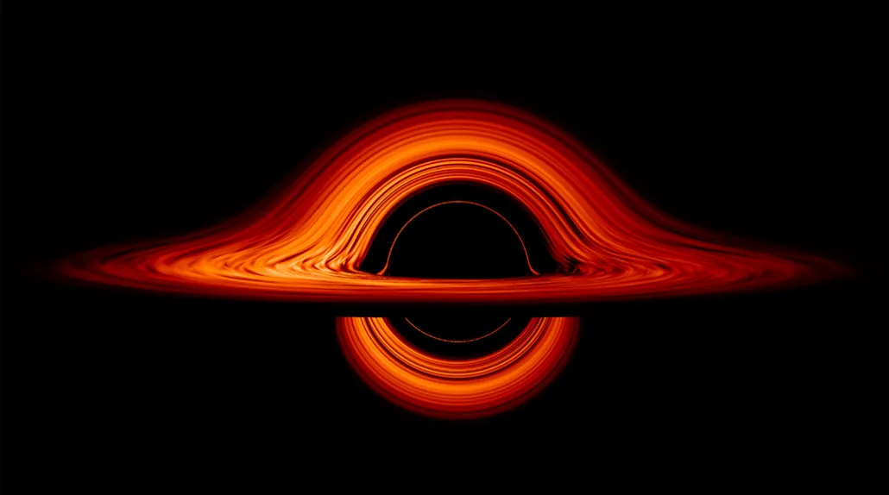
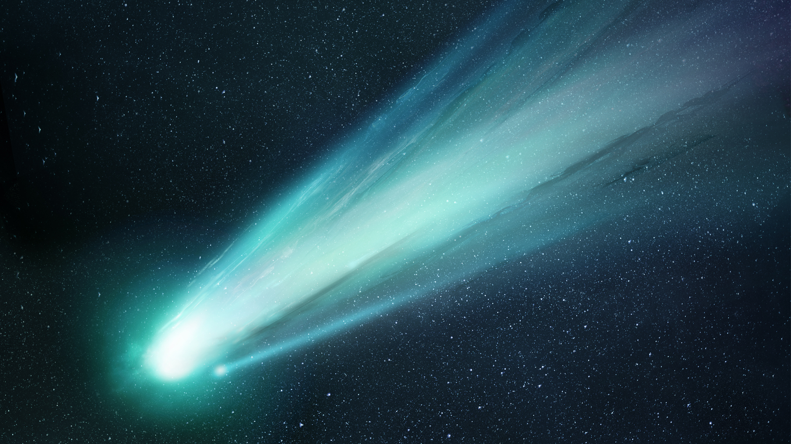

🪨 Asteroids
Asteroids are rocky objects that orbit the Sun, mostly found in the asteroid belt between Mars and Jupiter.
- Smaller than planets
- Irregular shapes
- Can sometimes impact planets

Black holes are regions of space where gravity is so strong that nothing, not even light, can escape. They form when massive stars collapse at the end of their life cycle.


Comets are icy objects that orbit the Sun. When they get close, they heat up and release gas, forming a glowing tail that always points away from the Sun.
Asteroids are rocky objects that orbit the Sun, mostly found in the asteroid belt between Mars and Jupiter.

Nebulae are massive clouds of gas and dust in space. They are often the birthplaces of new stars.